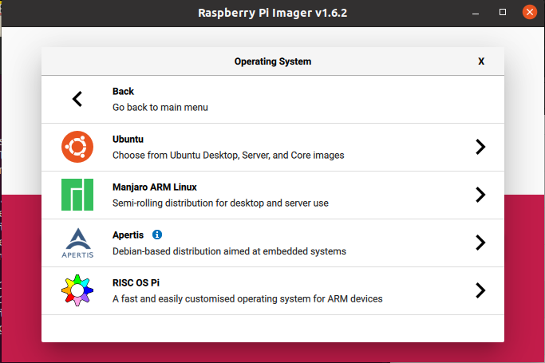

Install Ubuntu Server image
on Raspberry Pi
Image USB drive
Use Raspberry Pi Imager link to download Raspberry pi imager

select "Other general purpose OS"

select "Ubuntu"

select "Ubuntu Server 21.10 (RPI2/3/4/400) 64bit(zfs) or 32bit(no zfs)

Partition USB drive
Use Gparted to resize OS partition and add zdata partition

Boot Rpi and Check FW
Reference link Rpi4 Bootloader Firmware Update Guide
ubuntu@ubuntu:~$ sudo apt update && sudo apt upgrade -Y
ubuntu@ubuntu:~$ sudo reboot
ubuntu@ubuntu:~$ sudo rpi-eeprom-update
If FW is not up to date then run
ubuntu@ubuntu:~$ sudo rpi-eeprom-update -d -a
Add pi user
ubuntu@ubuntu:~$ sudo adduser pi
ubuntu@ubuntu:~$ sudo usermod -aG sudo pi
Add local name resolving
and change hostname
ubuntu@ubuntu:~$ sudo apt install libnss-mdns
ubuntu@ubuntu:~$ sudo nano /etc/nsswitch.conf
hosts: files mdns4_minimal [NOTFOUND=return] dns mdns4
ubuntu@ubuntu:~$ sudo hostnamectl set-hostname tnfspi
ubuntu@ubuntu:~$ sudo reboot
alex@xanadu_pc:~$
Remote ssh login
from PC terminal to user pi at tnfspi server
alex@xanadu_pc:~$ ssh pi@tnfspi.local
pi@tnfspi:~$